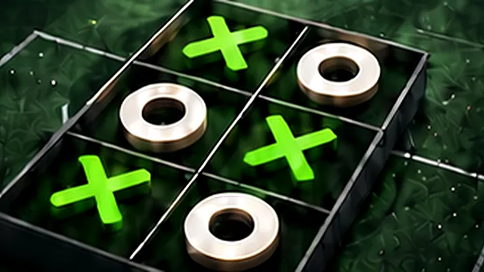
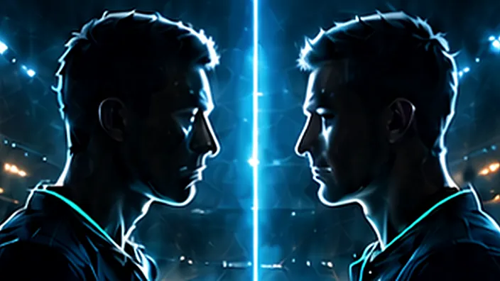
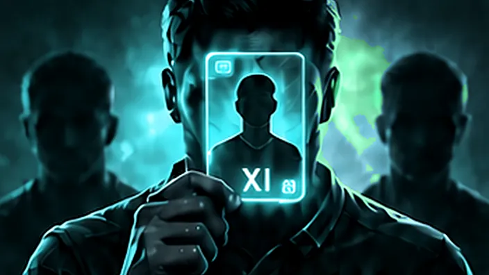
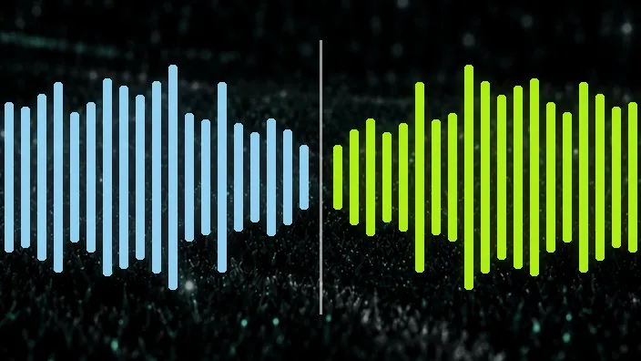
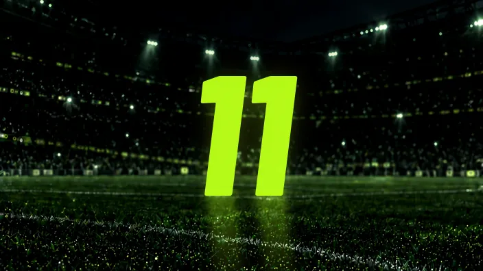

YAN OYUNLAR
QUIZ OYUNLARI
NEON XI evrenindeki bütün yan oyunlar tek merkezde. Bir oyun seç ve doğrudan başla.

KESİŞİM OYUNUFUTBOL XOX
Kulüp, lig ve milliyet kesişimlerini doğru futbolcularla kap.

KARİYER EŞLEŞTİRMEKARİYER İKİZİ
Kariyer parametrelerini oku, hedef oyuncunun en yakın ikizini keşfet.

SOSYAL TAHMİNFUTBOL IMPOSTER
İpucu ver, oyuncuları oku ve aranızdaki sahteyi ortaya çıkar.
HARF TAHMİNİFOOTBALL WORDLE
Serbest harf girişiyle gizli futbolcu adını adım adım çöz.

SES TAKLİDİRE:VERSE
Futbolcu ismini ters dinle, taklit et ve rakibinin tahminini çöz.

KADRO DRAFTIEN 11
1 kaleci, 2 defans, 2 orta saha ve 2 forvet seç; jackpot sonucunu rakibinle karşılaştır.
NEON GAMES ONLINE6 OYUN AKTİF